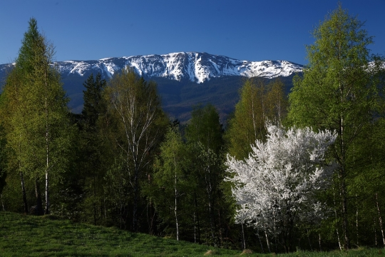
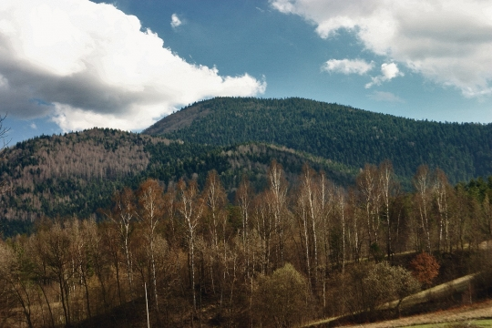
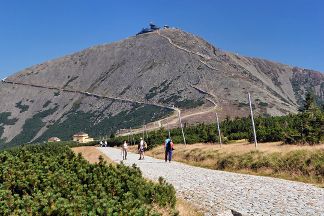

PARKI NARODOWE W POLSCE

Powyższa mapa przestawia rozkład parków narodowych w Polsce. Linki kierują do czterech wybranych przeze mnie parków: Słowińskiego, Babiogórskiego, Gorczańskiego oraz Karkonoskiego.
Definicja
Park narodowy – jedna z form ochrony przyrody w Polsce.
Zgodnie z ustawą o ochronie przyrody z 2004 r.[1] obejmuje obszar wyróżniający się szczególnymi wartościami przyrodniczymi,
naukowymi, społecznymi, kulturowymi i edukacyjnymi, o powierzchni nie mniejszej niż 1000 ha, na którym ochronie podlega cała
przyroda oraz walory krajobrazowe. Park narodowy tworzy się w celu zachowania różnorodności biologicznej, zasobów, tworów i
składników przyrody nieożywionej i walorów krajobrazowych, przywrócenia właściwego stanu zasobów i składników przyrody oraz
odtworzenia zniekształconych siedlisk przyrodniczych, siedlisk roślin, siedlisk zwierząt lub siedlisk grzybów.(Źródło: Wikipedia)